Listed only the open source projects. Refer to Resume for others.
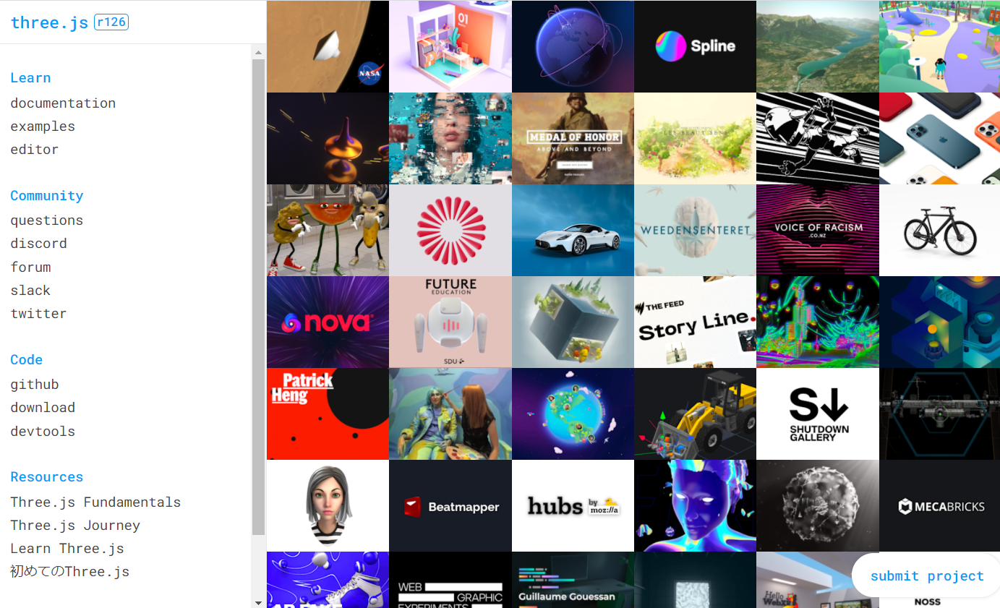
Three.js is the most widely-used JavaScript + WebGL graphics library
made by Ricardo Cabello, aka Mr.doob.
You can easily develop realtime Web 3D, and even XR (VR/AR), contents with it.
I have been contributing to this project as a core team member for
WebGL, WebGL 2.0, WebGPU, WebXR, glTF, MMD, Optimization, Animation,
Shaders, and bug-fix stuffs.
Core team, 2015 to present.
- 3D CG
- glTF
- GLSL
- JavaScript
- MMD
- WebGL
- WebGPU
- WebXR
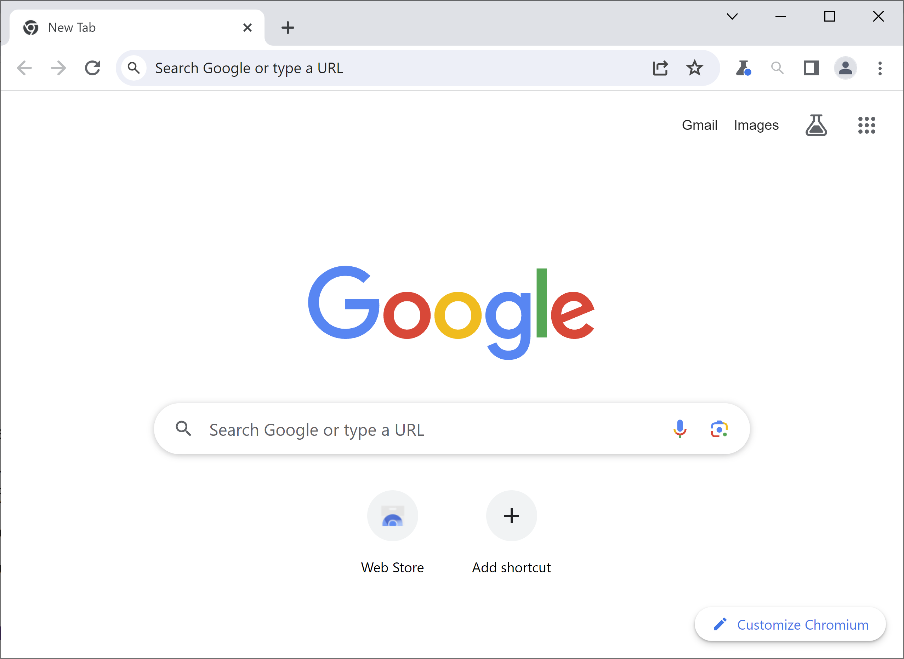
Chromium is an open-source web browser project and is based for Google
Chrome.
I have been contributing to it as an individual mainly for WebGPU
implementation.
These are my contribution list.
Contributor, 2022 to present.
- C/C++
- Chromium
- Web Browser
- WebGPU
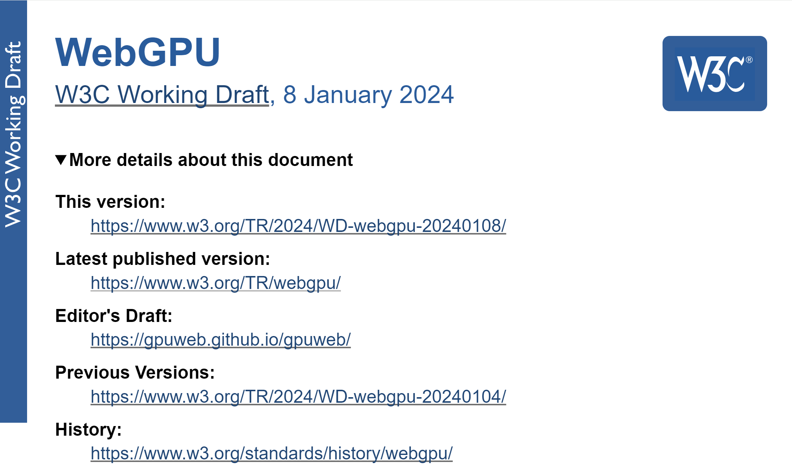
WebGPU is a new web standard
API to provide modern 3D graphics and compute capabilities to web
developers. The API is designed to efficient mapping to lower-level
native GPU APIs like Vulkan and
Metal. I have been
contributing to WebGPU specification mainly for bugfix and
clarification as an individual. Also, contributing to
WebGPU Conformance Test Suite.
Contributor, 2022 to present.
- 3D CG
- Web standard
- WebGPU

WebGPU devtools is a Web browser extension that helps debug WebGPU
applications by monitoring WebGPU usage. You can check for example
- Created WebGPU objects
- WebGPU command history and callback
- Error WebGPU commands
- WGSL shader code and compile error
- Buffer, texture, and framebuffer contents
Author, 2023 to present.
- 3D CG
- JavaScript
- TypeScript
- WebExtension
- WebGPU
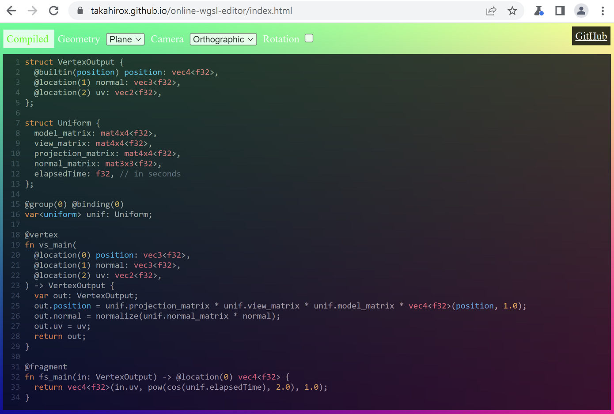
WGSL (WebGPU Shading language)
is a new shading language introduced for WebGPU. Online WGSL editor is a
live coding WGSL editor running on web browser for people who want to
learn. They can easily start to try WGSL by just opening the editor page
The editor supports rendering, automatic compilation, and error
highlighting.
Author, 2023 to present.
- 3D CG
- JavaScript
- TypeScript
- WebExtension
- WebGPU

Tiny Web Metaverse is a Web-based multi-user 3D virtual space lightweight
framework with high flexibility, good extensibility, and easy self-hosting.
It is built on web standards, making it familiar and easy to use for
developers with Web development experience.
Author, 2023 to present.
- 3D CG
- Docker
- Elixir
- JavaScript
- TypeScript
- WebAudio
- WebGL
- WebRTC
- WebSocket
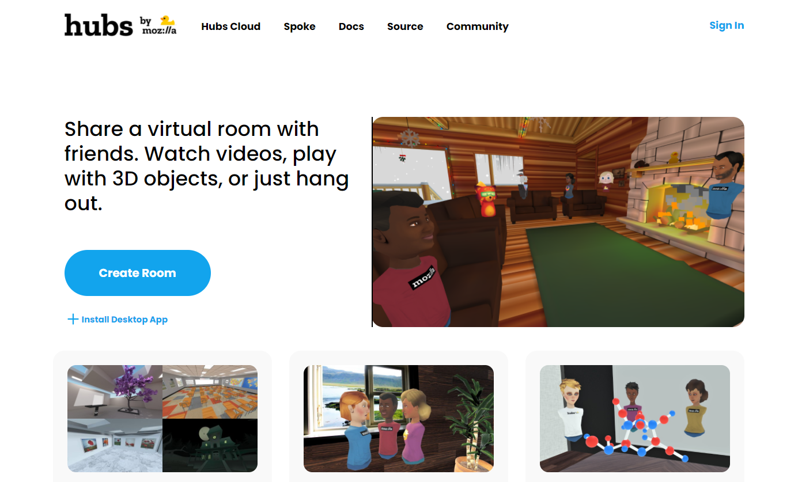
Hubs is a Mozilla's open and global virtual platform. You can remotelly
communicate with others in your web browsers just by sharing a room URL.
You can control your avatar in 3D scene and talk/chat/gesture with the
people/3D objects/medias in the room. I worked in the Hubs team for
ECS architecture migration, performance optimization, better
Mac/Android/iOS support, contribution to Three.js on which Hubs is
built, documenting, and backend with Elixir.
Team member, 2020 to 2023.
- A-Frame
- Elixir
- glTF
- JavaScript
- Three.js
- Typescript
- WebAudio
- WebGL
- WebRTC
- WebSocket
- WebXR
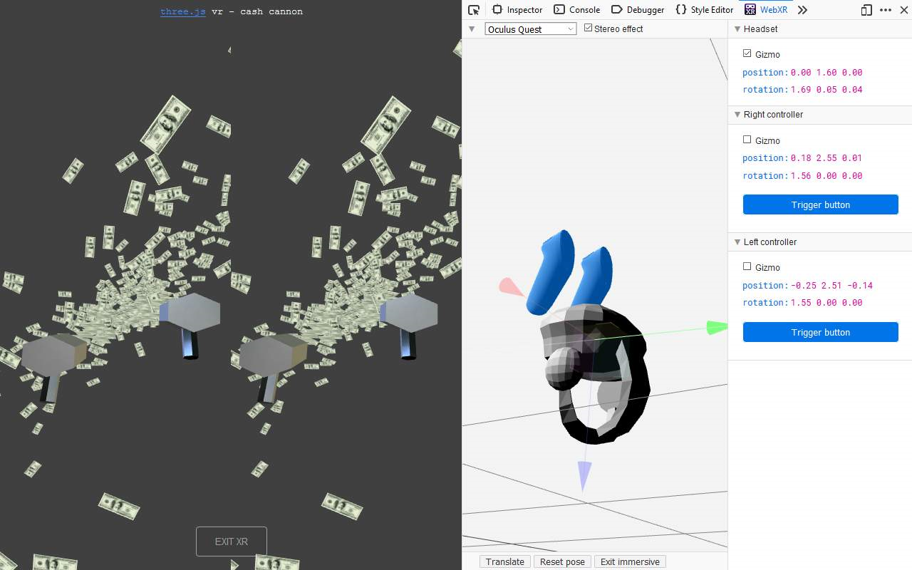
I have been leading WebXR Emulator Extension project. It is a browser extension
which emulates WebXR devices. It improves the WebXR content creators productivity
because they can test WebXR application in their desktop web browsers without
the need of physical WebXR devices. It supports both Firefox and Chrome.
Author, 2019 to present.
- JavaScript
- WebExtensions
- Three.js
- WebGL
- WebXR
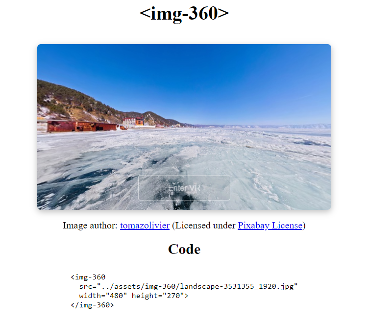
I lead Immersive Custom Elements project which is a set of Custom Elements for WebXR.
Users can easily embed WebXR contents into their web pages just by placing the custom
elements tag like <img-360 src="..."></img-360> without the
knowledge of 3D graphics, WebXR API, or even JavaScript. It helps web developers
and designers who are interested in WebXR but not familiar with the WebXR technology.
Author, 2019.
- Custom Elements
- JavaScript
- Three.js
- WebGL
- WebXR

iOS WebXR Viewer project is the first browser to implement WebXR on iOS.
It allows users to early WebXR experiment by connecting WebXR API with the underlying
iOS VR/AR capabilities. I worked on JavaScript WebXR API to support the latest API specification
and allowed users to access the API.
Team member, 2019 to 2020
- iOS
- JavaScript
- WebGL
- WebXR
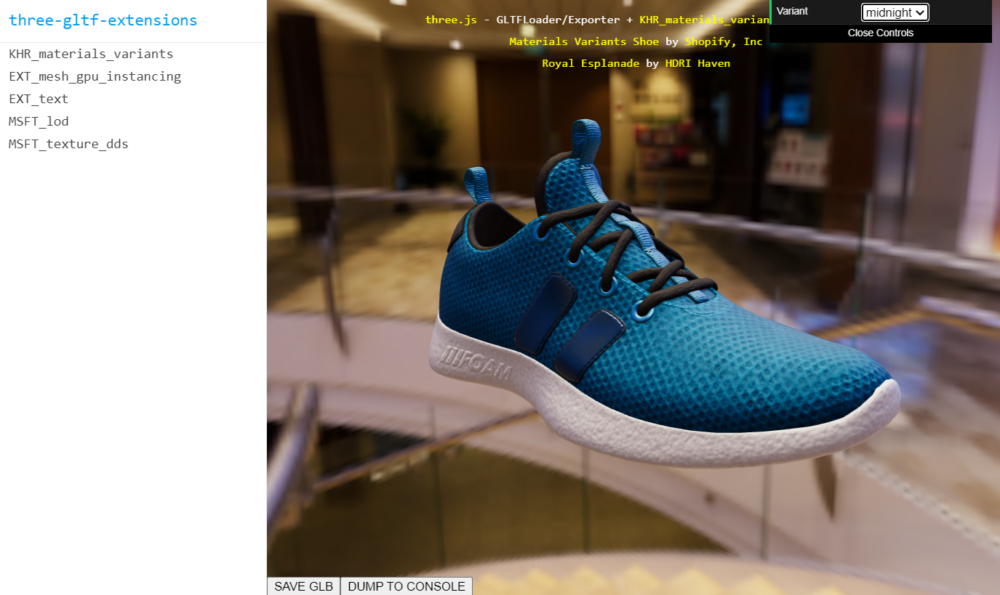
I started three-gltf-extensions project. Three.js glTF loader/exporter doesn't support some
glTF extensions due to some reasons. This project provides the plugins handling such extensions
at top of Three.js glTF loader/exporter extensibility mechanism I and other Three.js contributors built.
Author, 2021 to present.
- glTF
- JavaScript
- Three.js
- WebGL
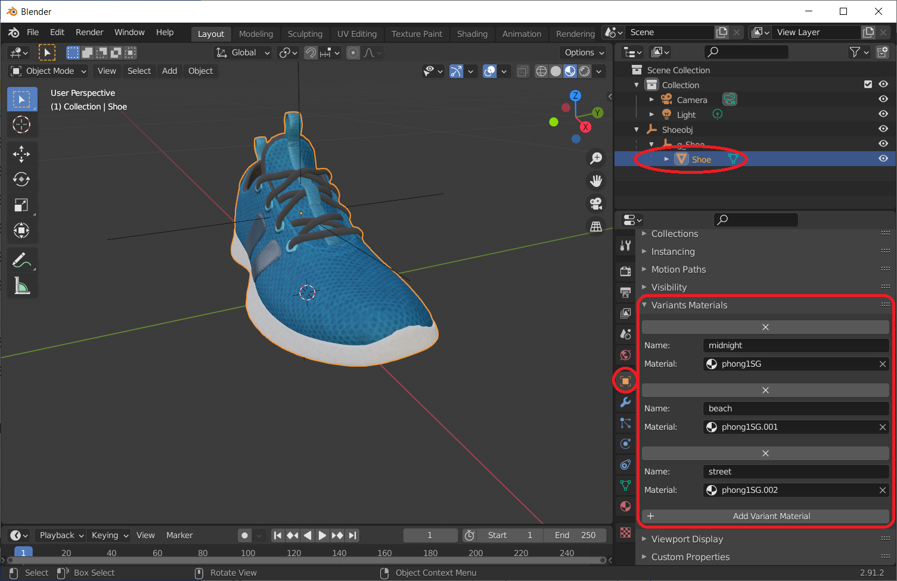
glTF-Blender-IO-materials-variants is a Blender 3D add-on for glTF
KHR_matetrials_variants extension.
The extension allows for a compact glTF representation of multiple material variants of an asset,
structured to allow low-latency switching at runtime and is good for digital commerce use case.
The official glTF Blender IO doesn't support this extension because it doesn't greatly match
core Blender 3D concepts. So I wrote an external glTF-Blender-IO-materials-variants addon which
adds UI for the extension in addition to the importing/exporting the extension capabilities.
Author, 2021 to present.
- Addon
- Blender3D
- glTF
- Python
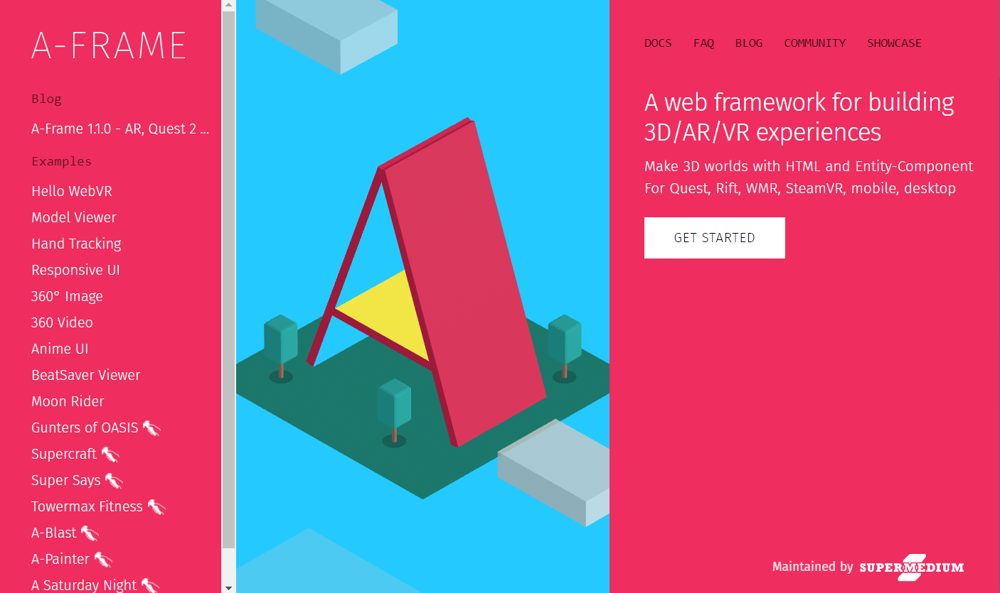
A-Frame is a web framework for creating WebXR content on top of HTML. It is originally
made by Mozilla and is now maintained by Supermedium.
I released many components for A-Frame and had demo presentations at A-Frame meetup.
Core team, 2016 to 2021.
- glTF
- JavaScript
- WebGL
- WebXR
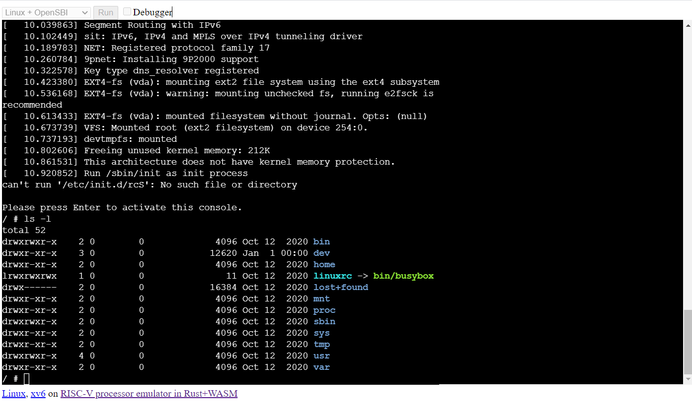
I wrote a "RISC-V processor and peripheral devices" emulator in Rust and compiled it to WebAssembly.
You can run Linux or xv6 (UNIX based tiny OS for education) on it in your web browsers
with good performance even without installing anythng.
It supports debugger so is good for RISC-V learners by setting breakpoints, doing step execution,
examining memory content, and so on.
Author, 2020 to present.
- CPU
- Emulator
- JavaScript
- Linux
- Processors
- RISC-V
- Rust
- WebAssembly
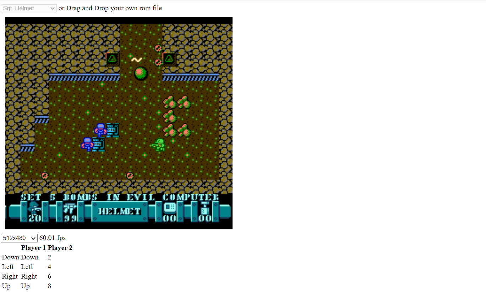
I wrote a "NES(Famicom) processors and peripheral devices" emulator in Rust and compiled it to WebAssembly.
You can play NES on it in your web browsers with good performance even without installing anythng.
It supports remote play with WebSocket and WebRTC so you can play the games with remote friends together.
Author, 2019 to present.
- CPU
- Emulator
- JavaScript
- NES(Famicom)
- Processors
- Rust
- WebAssembly
- WebRTC
- WebSocket

I wrote a "PDP-11 and peripheral devices" emulator in JavaScript.
PDP-11 processor is a very old processor. You can run UNIX V6,
written for PDP-11 and released in 1975, on it in your web browsers
even without installing anything.
Author, 2014 to 2015.
- CPU
- Emulator
- JavaScript
- PDP-11
- Processors
- UNIX

A fan game of Touhou Project(Shooter game project of Team Shanghai Alice).
I wrote it in JavaScript with WebGL. I optimized it very well so it can
draw over 1k elements in a scene with at 60fps in your browsers.
It supports remote play with WebSocket and WebRTC. You can play with remote friends together.
Author, 2014 to 2017.
- Game
- JavaScript
- WebGL
- WebRTC
- WebSocket

This is a set of Three.js MMDLoader applications.
MMD, Miku Miku Dance, is a freeware for creating 3D animated movies.
I wrote MMDLoader which imports the 3D model formats used in MMD to Three.js.
The applications showcase the advanced use cases of MMD + Three.js with Audio, Custom shaders,
Web Speech API, Facial recognition, Physics, VR, and so on.
Author, 2015 to 2017.
- GLSL
- JavaScript
- MMD
- Physics
- Three.js
- WebGL
- WebXR

This Three.js network library is built on WebSocket and WebRTC.
You can remotely sync Three.js objects.
Author, 2017
- JavaScript
- Physics
- Three.js
- WebRTC
- WebSocket
MMD parser parses the binary model, gesture, and animation formats (PMD, PMX, VPD, VMD) used in MMD
and creates JSON data.
Author, 2016 to present.